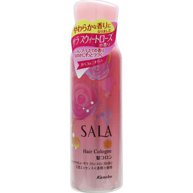

返回列表
产品名称：サラ 髪コロンB サラスウィートローズの香り

カネボウ化粧品 サラ 髪コロンB サラスウィートローズの香り ８０ｇ
メーカー カネボウ化粧品
JANコード 4973167103807
商品の特徴
イヤなにおいをカットし、シャンプーしたての華やかでやさしいサラスウィートローズの香りが、ふんわり広がりほのかにずっと続きます。
成分・分量
ＬＰＧ
エタノール
水添ポリイソブテン
香料
ジメチコン
ツバキ種子油
用法及び用量
上に向けて使う
●外出前やニオイが気になった時、髪から１０～１５ｃｍ離し、髪全体にスプレーして下さい。
●下向きや横向きではガスが先に抜け中身が残り、最後まで使用できないことがあります。
●目や顔などにかからないよう、スプレーの向きを確かめてご使用下さい。